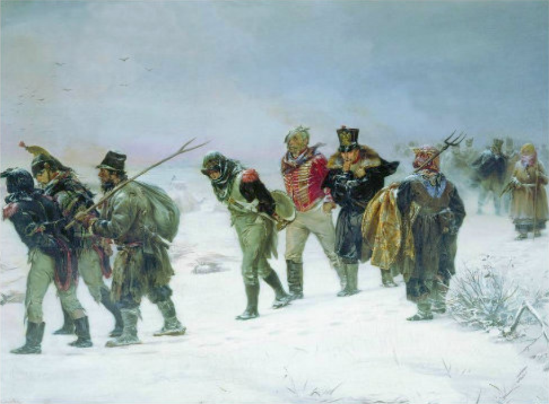
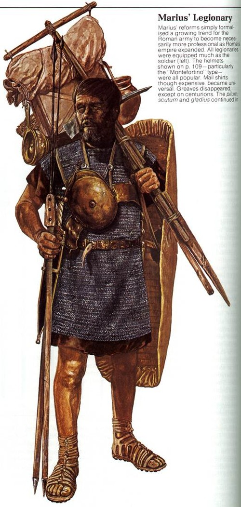
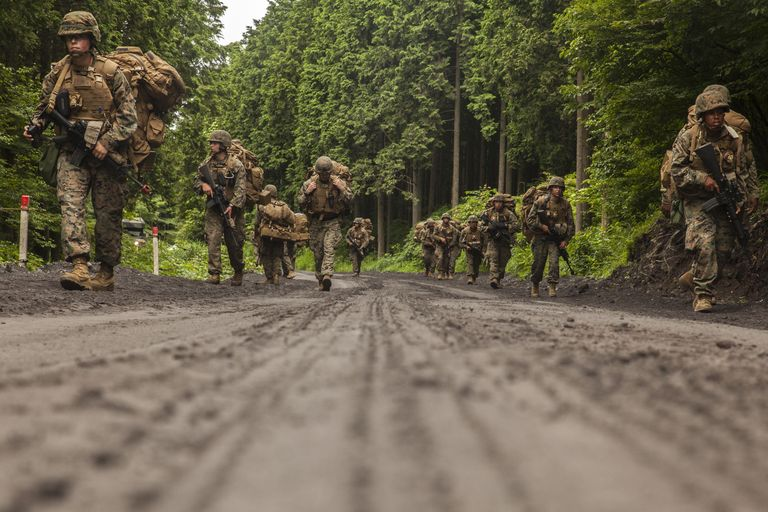
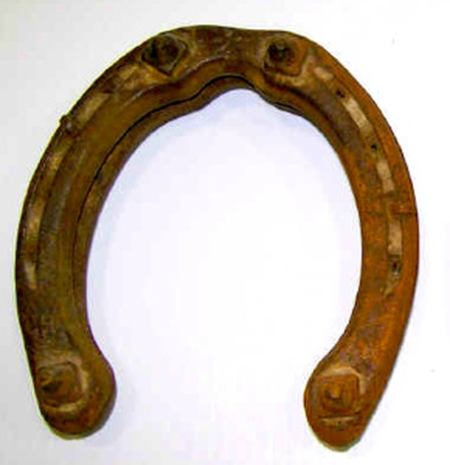
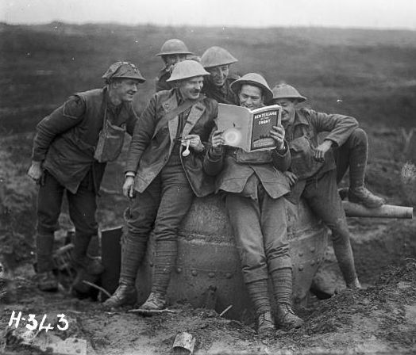
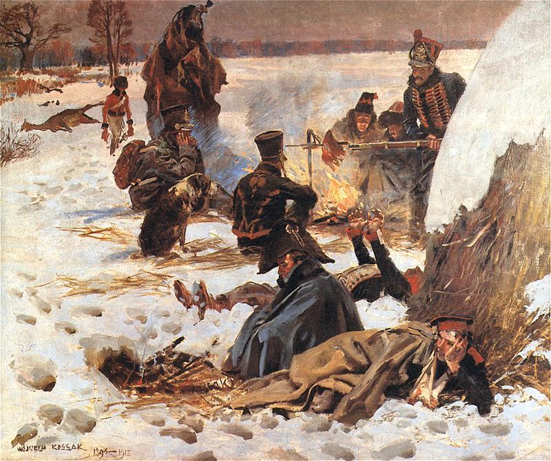

눈과 편자, 그리고 협동조합 - 후툇길의 명암
게시: 2021-07-19T06:30:00+09:00
빈약한 정규 외투는 갑작스러운 추위에 큰 도움이 되지 않았을지 몰라도, 산전수전 다 겪은 병사들의 노련함은 온갖 꼼수를 쥐어 짜냈습니다. 많은 병사들의 배낭 속에는 고향의 애인에게 선물하기 위한, 혹은 비싼 값에 팔기 위한 털가죽 등의 여성용 의류가 꽤 많이 들어있었습니다. 처음에는 애인 생각 돈 생각에 그냥 추위를 견뎌보려했던 병사들도 결국엔 배낭에서 온갖 여성복을 꺼내어 입었습니다. 의외로 풍성한 여성복은 품 안에 공기가 많이 들어있어 추위 단열 효과를 냈습니다. 얇은 바지만으로는 다리의 추위를 막을 수가 없었던 어떤 병사는 양가죽 자켓을 거꾸로 다리에 꿰어 입고 허리춤에서 그 아랫단을 묶는 기발함을 보여주기도 했습니다. 병사들은 서로의 우스꽝스러운 모습을 보고 웃기도 했다고 합니다.

(그나마 여성복이라도 입을 것이 있던 사람들은 운이 좋은 편이었습니다. 정규 군복만 있던 사람들에게는 그런 추위는 견디기 어려운 재앙이었습니다.)
이렇게 생존 본능이 뛰어났던 사람들과는 달리, 순박하고 의외로 연약한 생물인 말은 이 추위가 시작된지 2~3일 만에 만 단위로 쓰러져 죽었습니다. 비교적 규모가 작은 군단에 속했던 외젠의 제4 군단에서만도 2일 동안 1천2백 마리의 말이 쓰러졌습니다. 바이에른(Bayern) 사단의 경기병 연대 하나는 비교적 마필 관리를 잘 했기 때문에 비아즈마를 통과할 때만 해도 2백기의 기병들을 동원할 수 있었으나, 11월 6일 밤을 지내고 나자 50마리만 살아남았고, 그나마 하루가 더 지나가 남은 말들도 모조리 죽어버리고 말았습니다. 나중에 보시겠습니다만 이렇게 외젠의 군단에서 기병대가 사실상 전멸한 것은 그 뒤에 크나큰 비극의 원인이 되었습니다. 아직도 만 단위의 말이 남아있었다니 놀랄 일입니디만, 사실 아직 수만 마리의 말이 있었기에 그랑다메는 그나마 비아즈마를 넘을 수 있었던 것입니다. 병사들이 아무리 튼튼하다고 해도 병사들이 소지할 수 있는 짐의 무게는 개인 무장과 의류, 그리고 3일치의 식량이 전부였습니다. 나머지의 부대 공용 집기, 즉 취사용 솥단지라든가 텐트, 예비용 탄약과 물자 등은 모두 수레에 실어서 말이 끌어야 했습니다. 이건 고대 로마 군단병 시절부터 이어져 내려오던 전통이었습니다. 케사르 이전 로마 공화정 말기 즈음의 로마 장군 마리우스(Marius)는 시민병으로 이루어져 있던 로마 군단을 직업 군인화하고 사병화 시킨 인물이었습니다. 그는 로마 군단 체계의 이모저모를 혁신했는데, 그 중 하나가 행군시 어지간한 개인 장비들을 모두 병사 개인에게 짊어지게 했다는 점이었습니다. 이 때문에 불평하던 그의 병사들은 스스로를 '마리우스의 노새들'이라는 자조적인 별명으로 부르기도 했습니다. 그러나 그런 마리우스도 병사들의 공용 물자인 텐트와 식량, 취사 도구 등은 모두 수레로 실어날랐습니다. 즉, 고대 시절부터 보병이라고 해도 말과 수레가 없으면 정상적인 행군이 불가능했습니다.

(마리우스의 개혁에 따라 꽤 엄청난 무게의 짐을 짊어져야 했던 로마 군단병의 모습입니다. 이들의 갑주와 방패(scutum)와 투창(pilum) 등의 개인 장비에 의류와 야삽, 망태기 등 작업용 도구와 비상 식량 같은 것을 다 하면 거의 36kg에 달했을 거라고 합니다.)

(현대 미해병대 표준에 따르면, 특히 장교는 14km의 거리를 68kg의 장구류를 지고 이동할 수 있어야 합니다. 이런 극단적인 체력 검정 외에, 문서상으로도 현대 미군 병사들은 45kg 정도의 장구류를 지고 다녀야 하고, 실제로 아프가니스탄에서는 90kg을 짊어지고 다니는 경우도 있었다고 합니다. 나폴레옹 전쟁 당시의 병사 개인이 소지해야 하는 장구류의 무게는 대략 27kg 정도였다고 합니다.)
이미 이때 즈음해서는 그랑다르메의 말들은 숫자도 많이 줄어있었고 건강 상태도 매우 나빠져 있었습니다만, 그래도 말의 소중함을 아는 병사들은 어떻게 해서든 말이 굶어죽거나 얼어죽지 않도록 가능한 모든 노력을 다 했습니다. 가령 매서운 북풍이 부는 추운 밤에도 오두막을 발견하면 그 오두막을 점거한 병사들이 불평을 하건 말건 그 지붕을 이룬 짚단 등을 헐어서 말에게 먹이로 주었고, 말을 가능한 따뜻하게 해주려 온갖 애를 썼습니다. 말이 죽으면 말이 수송하던 모든 것, 즉 노략질한 은접시 등의 귀중품은 물론 소중한 식량과 그걸 조리할 솥 등을 버릴 수 밖에 없다는 것을 병사들은 잘 알고 있었기 때문이었습니다. 그러나 그런 노력에도 불구하고 말들은 빠른 속도로 죽어 넘어졌습니다. 그 이유 중 하나가 말 발굽에 씌운 편자였습니다. 10월 중순, 이미 폴란드 병사들은 스파이크가 달린 편자를 준비하며 프랑스군에게도 그런 편자를 만들어두라고 조언했습니다만 당장의 날씨가 따뜻하다보니 프랑스군들은 그런 조언을 무시한 바 있었습니다. 러시아에서의 경험이 풍부했던 콜랭쿠르가 직접 준비를 챙긴 나폴레옹 개인 식솔들의 말들은 그런 스파이크가 달린 편자를 구비할 수 있었고, 또 몇몇 현명한 장교들이 지휘하는 부대들도 그 준비가 되어 있었습니다. 그러나 그 외에 대부분의 말들은 맨질맨질한 바닥의 편자를 신고 있었습니다. 그리고 눈이 내리자 당장 죄없는 말들이 프랑스인들의 오만함에 대한 대가를 치러야 했습니다. 폴란드 병사들은 스파이크가 달린 편자를 신긴 말이 끄는 자신들의 마차가 신나게 달릴 때, 길 가에 주저앉은 마차 주변에서 넋을 잃고 부러운 눈으로 자신들을 쳐다보는 프랑스 장교들의 모습을 보며 한순간이나마 속이 후련했다고 합니다.

(당시의 스노우 체인 타이어라고 할 수 있는, 스파이크가 달린 말편자입니다. 이 비극 속에서도 조금 우스운 부분은 정작 러시아군도 다 이런 편자를 준비한 것은 아니었다는 점입니다. 러시아 귀족 장교인 욱스퀼(Uxkull)도 이런 편자가 없어서 눈길에 러시아 포병대의 말들이 넘어졌다가 다시 일어나지 못해 애를 먹었다는 기록을 남겼습니다.)
당시 내린 눈은 처음에는 소복소복 쌓였으나 수만의 사람과 말이 밟자 곧 꽝꽝 얼어붙은 빙판이 되었고, 당연히 미끄럽기 짝이 없었습니다. 리니에르(Marie Henri de Lignieres)라는 젊은 중위가 남긴 기록을 보면 눈에 덮힌 길은 자신만 해도 하루에 20번은 넘어졌다고 합니다. 미끄러운 편자를 신은 말들의 봉변은 말할 수 없었습니다. 많은 말들이 허둥거리며 넘어졌고, 그 과정에서 다리를 부러뜨리기도 했으며, 다행히 다치지 않았다고 하더라도 넘어졌다 다시 일어나는 과정에서 말과 사람 모두가 엄청나게 고생을 해야 했습니다. 특히 어디에나 있기 마련인 오르막길, 그리고 그보다 더욱 치명적인 내리막길에서 많은 마차와 말, 사람들이 희생되었습니다. 미끄러운 내리막길에서는 많은 병사들이 달라붙어 마차가 미끄러져 내려가지 않도록 당기며 감속을 했지만 그 중 누구 하나가 발이 미끄러져 쓰러지면 다른 병사들도 덩달아 미끄러지며 마차 전체가 내리막길을 미끄러져 내렸고, 그러는 와중에 사람, 특히 말의 다리를 부러뜨렸습니다. 그러면 그것으로 끝, 이제는 버리고 가야 할 마차에 병사들이 우르르 몰려들어 쓸 만한 물건을 챙겼고, 그런 혼란 속에서 질서있게 분배하면 훨씬 더 아낄 수 있었던 밀가루나 곡식 등이 허무하게 바닥에 쏟아지기도 했습니다. 병사들은 처음에는 욕심을 내어 가능한 한 많은 짐을 배낭과 외투 주머니에 쑤셔 넣었지만, 결국 많은 물자들이 길가에 버려졌습니다. 그러는 와중에도 식량을 버리는 대신 금은으로 된 귀중품을 챙기는 병사들이 꽤 많았습니다. 이는 분명히 어리석은 행동이었지만 일평생 처음 잡은 기회를 추위와 배고픔 때문에 던져 버릴 수 없었던 전형적인 서민들의 모습이었습니다. 재미있는 사실은 이렇게 버려진 물건들 중에 책이 꽤 많았다는 점입니다. 당시 귀족 저택의 벽장을 장식했던 책들은 나름 고가품이었는데, 프랑스어를 공용어로 하던 러시아 귀족들의 취향에 따라 책들도 당연히 모두 프랑스어로 인쇄되어 있었으므로 프랑스나 독일에 가져가면 꽤 비싼 값에 팔 수 있었습니다. 책은 꽤 무거운 물건이었으므로 당연히 뭔가 버릴 때 1순위로 버려졌습니다. 부대가 행군하는 길 가에 하도 책이 많이 버려져서 지나가는 병사들은 그 중 일부를 주워 읽다가 다 읽거나 흥미가 떨어지면 다시 내버렸고, 그렇게 버려진 책은 뒷줄의 다른 병사가 또 주워서 읽는 등, 그랑다르메의 행군길은 일종의 이동식 도서관을 방불케 했습니다. 비아즈자 전투에서 말이 넘어지는 바람에 중상을 입고 마차에 누워서 후퇴를 해야 했던 제5 군단장 포니아토프스키도, 무료하기 짝이 없는 마차 안에서 그렇게 길 가에 버려진 책을 주워서 읽다가 (무슨 책이었는지 몰라도) 그 책에 흠뻑 빠져 열심히 읽었고 폴란드까지 그 책을 들고 왔다고 합니다.

(병사들이 길을 걸으며 책을 읽는다고 하니 뭔가 안 어울릴 것 같지만, 뭔가 읽을거리가 있다는 것은 암담한 현실의 고통을 잠시나마 잊게 해주는 좋은 오락거리입니다. 물론 가장 좋은 읽을거리는 사랑하는 이에게서 온 편지이겠지요.)
책을 버리는 것은 재미있는 일화에 불과했지만, 심각한 문제는 적지 않은 병사들이 머스켓 소총과 탄약을 버렸다는 점이었습니다. 총과 탄약은 무겁고 거추장스러운 물건이었습니다. 그리고 자신들의 생존에 도움이 되지도 않았습니다. 그리고 많은 병사들이 손에 장갑이 없었습니다. 그러다보니 얼어붙은 강철 총신에 맨 살이 달라붙어 얼어버리는 일도 종종 발생했고, 그 핑계를 대고 적지 않은 병사들이 총을 버렸습니다. 더욱 기가 막힌 노릇은 날씨가 변덕을 부린다는 것이었습니다. 이렇게 모든 것이 얼어붙자, 일부 마차꾼들은 기지를 발휘했습니다. 아예 마차에서 바퀴를 떼어내고 썰매처럼 만든 것이지요. 이들은 쉽게 하루 이틀 그나마 쉽게 이동할 수 있었으나, 이틀 뒤 갑자기 날이 풀리며 빙판이 다시 진흙구덩이가 되자 망연자실, 결국 마차와 거기 실린 물건을 버릴 수 밖에 없었습니다. 그러나 불과 하루 뒤, 다시 기온이 떨어지며 모든 것을 또 얼려버렸습니다. 하지만 모든 병사들의 상황이 절망적인 것은 또 아니었습니다. 정상적인 보급이 불가능한 상황이 되자 병사들 간에도 능력자와 무능력자간의 구분이 확실히 벌어지면서 희비가 엇갈렸습니다. 가령 제1 기병군단 소속 포병대의 쇼팽(Chopin) 대령이라는 사람은 10여명의 똘똘한 병사들을 모아 사적인 생활협동조합 같은 것을 만들었습니다. 이들은 항상 뭉쳐 다니면서 누군가는 말을 돌보고 누군가는 땔감을 구하는 등 각자 역할 분담을 확실히 하여 모든 것을 자기들끼리 처리했습니다. 이들은 모두 각자 수단 방법을 가리지 않고 먹을 것을 구해오든 빼앗아오든 훔쳐오든 했고, 이렇게 모은 식량과 집기를 자기들만의 말과 수레에 싣고 다니며 밤마다 불을 피우고 넉넉히 먹었습니다. 이들은 철저하게 배타적이었는데, 이유는 당시 그랑다르메 내부에서는 끊임없이 절도 사건이 일어났기 때문이었습니다. 금반지나 은접시보다도, 무엇보다 당장 살기 위한 의류와 식량을 도둑 맞는 경우가 많았습니다. 따라서 믿을 수 있는 사람들끼리 결성한 이런 생활협동조합 속에 들어간 병사들은 그나마 먹고 살 만 했고, 그러지 못한 병사들, 특히 다른 부대에서 낙오된 병사들은 아무런 도움을 받지 못하고 그대로 굶어야 했습니다.

(다들 쫄쫄 굶은 것은 아니었습니다. 분명히 누군가는 이렇게 잘 먹기도 했습니다.)
그리고 이런 상황은 그랑다르메가 하나의 군대로서 존재하지 못하고 점점 부서져 내리는 것을 더욱 가속화했습니다.
Source : 1812 Napoleon's Fatal March on Moscow by Adam Zamoyski
https://imperiumromanum.pl/en/curiosities/marius-mules/
http://www.penfield.edu/webpages/jgiotto/photos/1482905/Marius%20Mules.jpg
{kind=link}
https://www.popularmechanics.com/military/research/a25644619/soldier-weight/
https://napoleon1812.wordpress.com/2012/11/11/was-it-the-horseshoes/